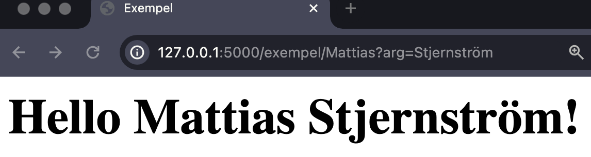

Kapitel 4 - Variabler och Parametrar i sökvägar
#Vi ska prata om sökvägar en stund till. Nämligen variabler och paramterar i sökvägar. Det är alltså dynamiska sätt att skriva sökvägar. Vi kommer alltså att göra våran applikation mer dynamisk!
Variabler i sökvägar
#
Vi kommer att använda oss av vår exempel-fil och funktion
igen. Vi öppnar först app.py och tittar på vår funktion
exempel(). Som vi kommer att skicka en variabel till.
Tanken är att vi ska skicka en variabel som visar ditt namn. Så vi
börjar med att lägga till en variabel i vår funktion. Vi kallar den
för name. Vi börjar med att berätta för flask hur vi vill
att sökvägen ska se ut. Jag vill att den ska se ut såhär:
@app.route("/exempel/<name>")Sedan gör du precis som vanligt i python:
def exempel(name): # Samma variabel-namn som dekoratören!
Nu vill vi skicka med variabeln till vår html-fil. Det gör vi genom
att skicka med den som ett parameter i render_template().
Vi skriver alltså såhär:
return render_template("exempel.html", your_name = name)
Nu har vi skickat med variabeln name till vår html-fil.
Nu kan vi använda den i vår html-fil. Vi skriver alltså såhär:
<h1>Hello {{ your_name }}!</h1> <!-- Ersätt texten "Exempel" -->
Nu ska det gå att skriva mitt namn i sökfältet. Jag skriver alltså
/example/Mattias i sökfältet så får jag detta tillbaks:
Inga variabler i sökvägar
#
Vi har alltså instruerat flask att bara ta emot variabler i våran
sökväg. Skriver vi inget efter /example/ så kommer inte
flask att hitta något som matchar sökvägen. Flask kommer alltså att ge
oss en 404-sida.
Vi kan dock ändra på detta. Vi kan göra så att flask tar emot sökvägar
utan variabler. Vi gör det genom att lägga till ett argument till vår
dekoratör. Vi lägger till strict_slashes och sätter det
till False. Det gör vi såhär:
@app.route("/exempel/", strict_slashes=False)
@app.route("/exempel/<name>")
def exempel(name="World"):
return render_template("exempel.html", your_name=name)Kodsammanfattning
På rad 1 så lägger vi till en route som inte tar någon
variabel. För att göra det möjligt att skriva både
/exempel och /exempel/ (notera
snedstrecket), så sätter vi strict_slashes till
False, då detta är True som default. På
rad 2 så lägger vi till en route som tar en variabel. På
rad 3 så lägger vi till en default-variabel som heter
World, den fungerar som vanligt i python som en fallback,
utifall vi inte anger en variabel. Den kommer alltså visa "world" om
inget argument passas. På rad 4 så skickar vi med
variabeln till vår html-fil som innan.
Alternativ
Sökvägar behöver inte sluta med variabler. Vi kan alltså skriva såhär om vi vill:
@app.route("/<variabel>/exempel")Detta kan vara behändigt om vi vill ha ett specifikt schema på dina sökägar. Vi kan även ha fler variabler i sökvägen:
@app.route("/<variabel1>/<variabel2>")Parametrar i sökvägar
#
Vi kan även skicka med parametrar till våra sökvägar. Det gör vi genom
att ändra lite i vår dekoratör. Vi lägger till
methods och sätter det till en lista med metoder som vi
vill tillåta. Vi vill tillåta GET och POST.
Vi gör det såhär:
@app.route("/exempel/<name>", methods=["GET", "POST"])
Nu kan vi skicka med parametrar till vår funktion. För att ta emot en
parameter behöver vi dock importera request från flask
och sedan använda request för att ta emot parametern.
Sedan använder vi request för att ta emot parametern. Vi
gör det såhär:
from flask import request # Glöm inte att importera övriga dependencies också!
...
@app.route("/exempel/", strict_slashes=False)
@app.route("/exempel/<name>", methods=["GET"])
def exempel(name="World"):
arg = request.args.get("arg", "")
if arg:
name = name + " " + arg
return render_template("exempel.html", your_name=name)
Skriver vi då /exempel/Mattias?arg=Stjernström i
sökvägen, så får vi, i det här exemplet:

Och skriver vi inget parameter, så får vi samma resultat som i vårt
gamla exempel. Alltså i det här fallet bara
Hello Mattias! eller Hello World! om vi inte
skriver något namn.
Vad är request.args?
request.args är inbyggd flask-funktion som skapar en
dictionary, den innehåller alla parameteren som skickas med i
sökvägen. Varje parameter är en "key-value"-par och vi kan alltså
hämta ut ett parameter genom att skriva
request.args.get("arg"). Vi kan även sätta ett
default-värde om vi vill. Vi kan alltså skriva
request.args.get("arg", "") för att sätta ett
default-värde till en tom sträng. Detta kommer att bli tydligare i
nästa avsnitt.
Parametrar i sökvägen
Vi kan alltså skicka med parametrar i sökvägen. Vi kan alltså skriva
/exempel/Mattias?arg=Stjernström i sökvägen. Vi kan även
skicka med flera parametrar. Vi kan alltså skriva
/exempel/Mattias?arg=Stjernström&arg2=Stjernström i
sökvägen. Vi kan alltså skicka med hur många parametrar som helst.
Ett frågetecken (?) används för att separera sökvägen
från parametrarna. Sedan använder vi ett likhetstecken
(=) för att separera nyckeln från värdet. Vi använder vi
ett "och"-tecken (&) för att separera parametrarna från
varandra.